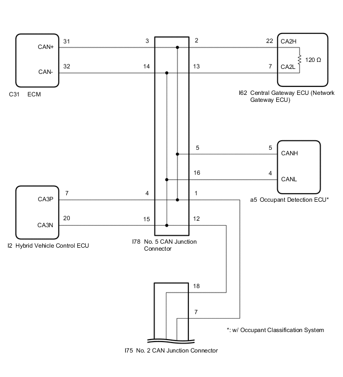
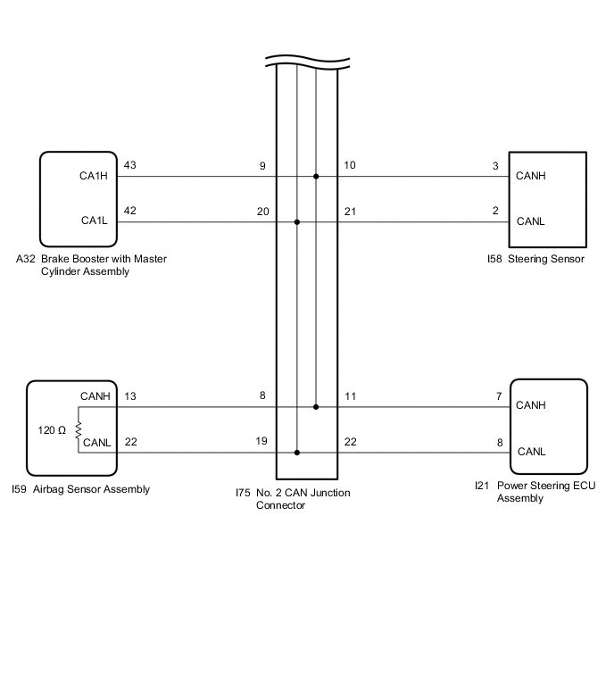
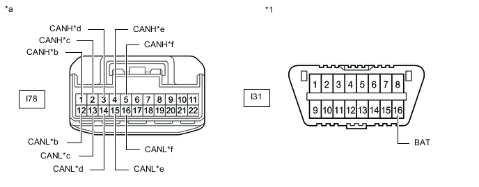
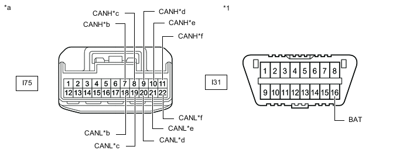
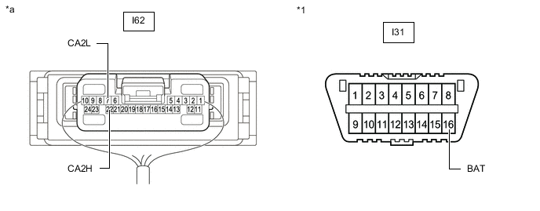

CAN COMMUNICATION SYSTEM Check Bus 4 Line for Short to +B
DESCRIPTION
There may be a short circuit between one of the CAN bus lines and +B when no resistance exists between terminal 22 (CA2H) of the central gateway ECU (network gateway ECU) and terminal 16 (BAT) of the DLC3, or terminal 7 (CA2L) of the central gateway ECU (network gateway ECU) and terminal 16 (BAT) of the DLC3.
| Symptom | Trouble Area |
|---|---|
| No resistance exists between terminal 22 (CA2H) of the central gateway ECU (network gateway ECU) and terminal 16 (BAT) of the DLC3, or terminal 7 (CA2L) of the central gateway ECU (network gateway ECU) and terminal 16 (BAT) of the DLC3. |
|
WIRING DIAGRAM


CAUTION / NOTICE / HINT
Note
-
Because the order of diagnosis is important to allow correct diagnosis, make sure to begin troubleshooting using How to Proceed with Troubleshooting when CAN communication system related DTCs are output.
-
Before measuring the resistance of the CAN bus, turn the power switch off and leave the vehicle for 1 minute or more without operating the key or any switches, or opening or closing the doors. After that, disconnect the cable from the negative (-) auxiliary battery terminal and leave the vehicle for 1 minute or more before measuring the resistance.
-
After turning the power switch off, waiting time may be required before disconnecting the cable from the negative (-) auxiliary battery terminal. Therefore, make sure to read the disconnecting the cable from the negative (-) auxiliary battery terminal notices before proceeding with work.
-
After performing repairs, perform the DTC check procedure and confirm that the DTCs are not output again.
DTC check procedure: Turn the power switch on (IG) and wait at least approximately 61 seconds. Turn the blind spot monitor system on using the blind spot monitor main switch (ON/OFF switch), turn the cruise control main switch on, turn the speed limiter switch on, turn the lane departure alert main switch on and then drive the vehicle at a speed of 20 km/h (12 mph) or more for approximately 5 minutes or more.
-
After the repair, perform the CAN bus check and check that all the ECUs and sensors connected to the CAN communication system are displayed as normal.
-
Before replacing the hybrid vehicle control ECU, refer to Service Bulletin.
Tech Tips
-
Before disconnecting related connectors for inspection, push in on each connector body to check that the connector is not loose or disconnected.
-
When a connector is disconnected, check that the terminals and connector body are not cracked, deformed or corroded.
PROCEDURE
-
CHECK FOR SHORT TO +B IN CAN BUS LINE (NO. 5 CAN JUNCTION CONNECTOR)
-
Disconnect the cable from the negative (-) auxiliary battery terminal.
-
Disconnect the I78 No. 5 CAN junction connector.
-
Measure the resistance according to the value(s) in the table below.

*1 DLC3 - - *a Front view of wire harness connector
(to No. 5 CAN Junction Connector)
*b to No. 2 CAN Junction Connector *c to Central Gateway ECU (Network Gateway ECU) *d to ECM *e to Hybrid Vehicle Control ECU *f to Occupant Detection ECU
(w/ Occupant Classification System)
Standard Resistance Tester Connection Condition Specified Condition Connected to I78-1 (CANH) - I31-16 (BAT) Cable disconnected from negative (-) auxiliary battery terminal 6 kΩ or higher No. 2 CAN junction connector I78-12 (CANL) - I31-16 (BAT) I78-2 (CANH) - I31-16 (BAT) Cable disconnected from negative (-) auxiliary battery terminal 6 kΩ or higher Central gateway ECU (network gateway ECU) I78-13 (CANL) - I31-16 (BAT) I78-3 (CANH) - I31-16 (BAT) Cable disconnected from negative (-) auxiliary battery terminal 6 kΩ or higher ECM I78-14 (CANL) - I31-16 (BAT) I78-4 (CANH) - I31-16 (BAT) Cable disconnected from negative (-) auxiliary battery terminal 6 kΩ or higher Hybrid vehicle control ECU I78-15 (CANL) - I31-16 (BAT) I78-5 (CANH) - I31-16 (BAT) Cable disconnected from negative (-) auxiliary battery terminal 6 kΩ or higher Occupant detection ECU* I78-16 (CANL) - I31-16 (BAT)
-
*: w/ Occupant Classification System
Result Result Proceed to OK A NG (Line to central gateway ECU (network gateway ECU)) B NG (Line to No. 2 CAN junction connector) C NG (Line to ECU or sensor) D -
A 
REPLACE NO. 5 CAN JUNCTION CONNECTOR
C 
CHECK FOR SHORT TO +B IN CAN BUS LINE (NO. 2 CAN JUNCTION CONNECTOR) Click here
D
CHECK FOR SHORT TO +B IN CAN BUS LINE (ECU OR SENSOR) Click here
B 
-
-
CHECK FOR SHORT TO +B IN CAN BUS LINE (NO. 5 CAN JUNCTION CONNECTOR - CENTRAL GATEWAY ECU (NETWORK GATEWAY ECU))
-
Disconnect the I62 central gateway ECU (network gateway ECU) connector.
-
Measure the resistance according to the value(s) in the table below.
*1 DLC3 - - *a Front view of wire harness connector
(to No. 5 CAN Junction Connector)
*b to Central Gateway ECU (Network Gateway ECU) Standard Resistance Tester Connection Condition Specified Condition I78-2 (CANH) - I31-16 (BAT) Cable disconnected from negative (-) auxiliary battery terminal 6 kΩ or higher I78-13 (CANL) - I31-16 (BAT) Result Result OK NG
OK
REPLACE CENTRAL GATEWAY ECU (NETWORK GATEWAY ECU) Click here
NG
REPAIR OR REPLACE CAN MAIN BUS LINE OR CONNECTOR (NO. 5 CAN JUNCTION CONNECTOR - CENTRAL GATEWAY ECU (NETWORK GATEWAY ECU))
-
-
CHECK FOR SHORT TO +B IN CAN BUS LINE (NO. 2 CAN JUNCTION CONNECTOR)
-
Disconnect the I75 No. 2 CAN junction connector.
-
Measure the resistance according to the value(s) in the table below.

*1 DLC3 - - *a Front view of wire harness connector
(to No. 2 CAN Junction Connector)
*b to No. 5 CAN Junction Connector *c to Airbag Sensor Assembly *d to Brake Booster with Master Cylinder Assembly *e to Steering Sensor *f to Power Steering ECU Assembly Standard Resistance Tester Connection Condition Specified Condition Connected to I75-7 (CANH) - I31-16 (BAT) Cable disconnected from negative (-) auxiliary battery terminal 6 kΩ or higher No. 5 CAN junction connector I75-18 (CANL) - I31-16 (BAT) I75-8 (CANH) - I31-16 (BAT) Cable disconnected from negative (-) auxiliary battery terminal 6 kΩ or higher Airbag sensor assembly I75-19 (CANL) - I31-16 (BAT) I75-9 (CANH) - I31-16 (BAT) Cable disconnected from negative (-) auxiliary battery terminal 6 kΩ or higher Brake booster with master cylinder assembly I75-20 (CANL) - I31-16 (BAT) I75-10 (CANH) - I31-16 (BAT) Cable disconnected from negative (-) auxiliary battery terminal 6 kΩ or higher Steering sensor I75-21 (CANL) - I31-16 (BAT) I75-11 (CANH) - I31-16 (BAT) Cable disconnected from negative (-) auxiliary battery terminal 6 kΩ or higher Power steering ECU assembly I75-22 (CANL) - I31-16 (BAT) Result Result Proceed to OK A NG (Line to No. 5 CAN junction connector) B NG (Line to ECU or sensor) C
A
REPLACE NO. 2 CAN JUNCTION CONNECTOR
B
REPAIR OR REPLACE CAN MAIN BUS LINE OR CONNECTOR (NO. 2 CAN JUNCTION CONNECTOR - NO. 5 CAN JUNCTION CONNECTOR)
C
-
-
CHECK FOR SHORT TO +B IN CAN BUS LINE (ECU OR SENSOR)
-
Reconnect all wire harness connectors.
-
Disconnect the connector that includes terminals CANH and CANL from the ECU or sensor to which the bus line shorted to +B is connected.
-
Measure the resistance according to the value(s) in the table below.

*1 DLC3 - - *a Component with harness connected
(Central Gateway ECU (Network Gateway ECU))
- - Standard Resistance Tester Connection Condition Specified Condition I62-22 (CA2H) - I31-16 (BAT) Cable disconnected from negative (-) auxiliary battery terminal 6 kΩ or higher I62-7 (CA2L) - I31-16 (BAT) Tech Tips
-
If the resistance changes to 6 kΩ or higher when the connector is disconnected from the ECU or sensor, there may be a short in the ECU or sensor.
-
If the resistance does not become normal when the connector is disconnected from the ECU or sensor, check for a short to +B in the wire harness and repair or replace the wire harness or connector if necessary.
Result Result OK NG -
OK
REPLACE ECU OR SENSOR
NG
REPAIR OR REPLACE HARNESS OR CONNECTOR
-